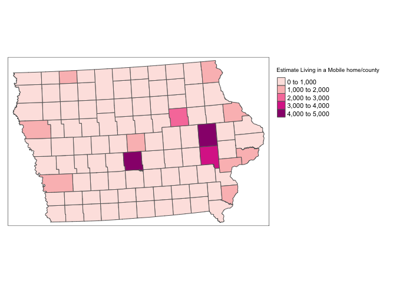
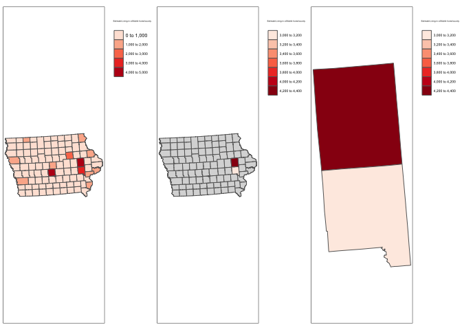
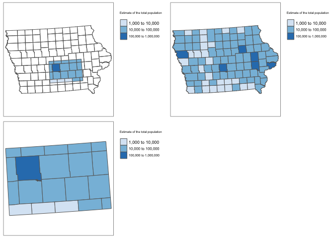
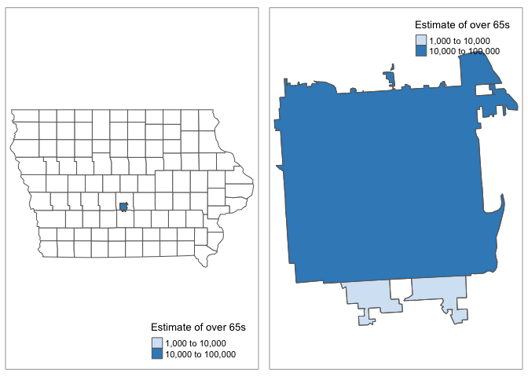
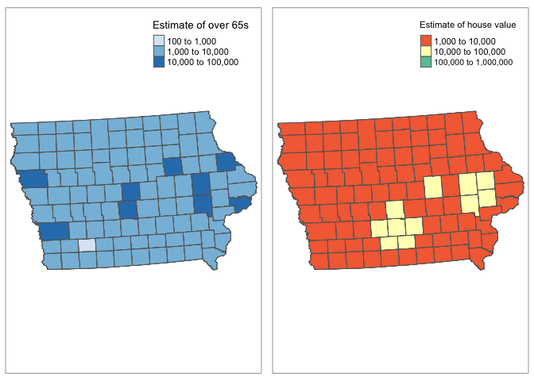
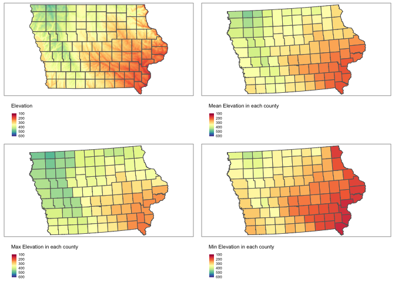
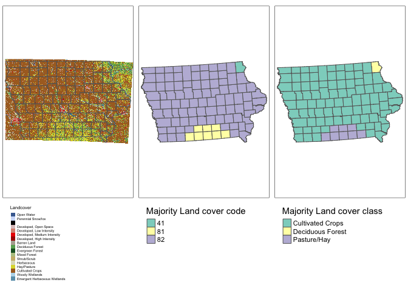

library(sp)
library(sf)
library(elevatr)
library(USAboundaries)
library(raster)
library(tidycensus)
library(rnaturalearth)
library(tmap)
library(exactextractr)
library(units)
library(tigris)
library(rmapshaper)
library(FedData)I am basing my examples on Iowan SVI data, SVI_county.sf
tmap_mode("plot")
tm_shape(SVI_county.sf)+
tm_polygons("E_MOBILE",title="Estimate Living in a Mobile home/county",palette="RdPu")+
tm_layout(legend.outside=TRUE)
Make sure your data is in sf format! Now there are a few options. You could filter to one of the columns and crop that way. For my data I have these columns
names(SVI_county.sf)## [1] "ST" "STATE" "ST_ABBR" "COUNTY" "FIPS"
## [6] "LOCATION" "AREA_SQMI" "E_TOTPOP" "M_TOTPOP" "E_HU"
## [11] "M_HU" "E_HH" "M_HH" "E_POV" "M_POV"
## [16] "E_UNEMP" "M_UNEMP" "E_PCI" "M_PCI" "E_NOHSDP"
## [21] "M_NOHSDP" "E_AGE65" "M_AGE65" "E_AGE17" "M_AGE17"
## [26] "E_DISABL" "M_DISABL" "E_SNGPNT" "M_SNGPNT" "E_MINRTY"
## [31] "M_MINRTY" "E_LIMENG" "M_LIMENG" "E_MUNIT" "M_MUNIT"
## [36] "E_MOBILE" "M_MOBILE" "E_CROWD" "M_CROWD" "E_NOVEH"
## [41] "M_NOVEH" "E_GROUPQ" "M_GROUPQ" "EP_POV" "MP_POV"
## [46] "EP_UNEMP" "MP_UNEMP" "EP_PCI" "MP_PCI" "EP_NOHSDP"
## [51] "MP_NOHSDP" "EP_AGE65" "MP_AGE65" "EP_AGE17" "MP_AGE17"
## [56] "EP_DISABL" "MP_DISABL" "EP_SNGPNT" "MP_SNGPNT" "EP_MINRTY"
## [61] "MP_MINRTY" "EP_LIMENG" "MP_LIMENG" "EP_MUNIT" "MP_MUNIT"
## [66] "EP_MOBILE" "MP_MOBILE" "EP_CROWD" "MP_CROWD" "EP_NOVEH"
## [71] "MP_NOVEH" "EP_GROUPQ" "MP_GROUPQ" "EPL_POV" "EPL_UNEMP"
## [76] "EPL_PCI" "EPL_NOHSDP" "SPL_THEME1" "RPL_THEME1" "EPL_AGE65"
## [81] "EPL_AGE17" "EPL_DISABL" "EPL_SNGPNT" "SPL_THEME2" "RPL_THEME2"
## [86] "EPL_MINRTY" "EPL_LIMENG" "SPL_THEME3" "RPL_THEME3" "EPL_MUNIT"
## [91] "EPL_MOBILE" "EPL_CROWD" "EPL_NOVEH" "EPL_GROUPQ" "SPL_THEME4"
## [96] "RPL_THEME4" "SPL_THEMES" "RPL_THEMES" "F_POV" "F_UNEMP"
## [101] "F_PCI" "F_NOHSDP" "F_THEME1" "F_AGE65" "F_AGE17"
## [106] "F_DISABL" "F_SNGPNT" "F_THEME2" "F_MINRTY" "F_LIMENG"
## [111] "F_THEME3" "F_MUNIT" "F_MOBILE" "F_CROWD" "F_NOVEH"
## [116] "F_GROUPQ" "F_THEME4" "F_TOTAL" "E_UNINSUR" "M_UNINSUR"
## [121] "EP_UNINSUR" "MP_UNINSUR" "E_DAYPOP" "Shape_STAr" "Shape_STLe"
## [126] "geometry"So for example
#or
SVI_county.UIOWA.sf <- dplyr::filter(SVI_county.sf, COUNTY %in% c("Linn","Johnson"))
map1 <- tm_shape(SVI_county.sf)+
tm_polygons("E_MOBILE",title="Estimate Living in a Mobile home/county",palette="Reds")+
tm_layout(legend.outside=TRUE)
map2 <- qtm(st_geometry(SVI_county.sf))+
tm_shape(SVI_county.UIOWA.sf)+
tm_polygons("E_MOBILE",title="Estimate Living in a Mobile home/county",palette="Reds")+
tm_layout(legend.outside=TRUE)
map3 <- tm_shape(SVI_county.UIOWA.sf)+
tm_polygons("E_MOBILE",title="Estimate Living in a Mobile home/county",palette="Reds")+
tm_layout(legend.outside=TRUE)
tmap_arrange(map1,map2,map3)
rm(map1);rm(map2); rm(map3)Ocean folks, this one is for you!
# Make sure your sf data is in lon/lat
SVI_county.sf <- st_transform(SVI_county.sf,4326)
# Turn it into sp data
SVI_county.sp <- as(SVI_county.sf,"Spatial")
# My new region from https://www.geoplaner.com/
Crop.Region <- as(extent(-94,-92,41,42), "SpatialPolygons")
# Subset the polygons to my new region
SVI_county.BOX.sp <- crop(SVI_county.sp, Crop.Region, byid=TRUE)
# and convert back to sf and your other map projection
SVI_county.BOX.sf <- st_as_sf(SVI_county.BOX.sp)
SVI_county.sf <- st_transform(SVI_county.sf,3744)
SVI_county.BOX.sf <- st_transform(SVI_county.BOX.sf,3744)
# and plot -
map1 <- tm_shape(SVI_county.sf)+
tm_polygons("E_TOTPOP",title="Estimate of the total population",
palette="Blues",style="log10_pretty")+
tm_layout(legend.outside=TRUE)
map2 <- tm_shape(SVI_county.sf)+tm_borders()+
tm_shape(SVI_county.BOX.sf)+
tm_polygons("E_TOTPOP",title="Estimate of the total population",
palette="Blues",style="log10_pretty")+
tm_layout(legend.outside=TRUE)
map3 <- tm_shape(SVI_county.BOX.sf)+
tm_polygons("E_TOTPOP",title="Estimate of the total population",
palette="Blues",style="log10_pretty")+
tm_layout(legend.outside=TRUE)
tmap_arrange(map2,map1,map3)
rm(map1);rm(map2);rm(map3)Sometimes we want to crop to a state/shapefile. For example imagine we want to crop to a city metropoliton area (see Lab 7)
# This could be any sf boundary you want to crop to.
# it doesn't have to be a city - here i look for Des Moines
pl <- places(state = "IA", cb = TRUE, year=2017)
DesMoines.borders.sf <- dplyr::filter(pl, NAME == "Des Moines")
# make sure they are the same map projection
SVI_county.sf <- st_transform(SVI_county.sf,4326)
DesMoines.borders.sf <- st_transform(DesMoines.borders.sf,4326)
# and crop and save to a new thing
DesMoines.SVI.sf <- ms_clip(target = SVI_county.sf, clip = DesMoines.borders.sf, remove_slivers = TRUE)
# change the map projection back
SVI_county.sf <- st_transform(SVI_county.sf,3744)
DesMoines.borders.sf <- st_transform(DesMoines.borders.sf,3744)
DesMoines.SVI.sf <- st_transform(DesMoines.SVI.sf,3744)
# and plot
map1 <- qtm(st_geometry(border.county.IA.sf),fill="white")+
tm_shape(DesMoines.SVI.sf)+
tm_polygons("E_AGE65",title="Estimate of over 65s",
palette="Blues",style="log10_pretty")+
tm_shape(DesMoines.borders.sf)+tm_borders()
map2 <- tm_shape(DesMoines.SVI.sf)+
tm_polygons("E_AGE65",title="Estimate of over 65s",
palette="Blues",style="log10_pretty")+
tm_shape(DesMoines.borders.sf)+tm_borders()
tmap_arrange(map1,map2)
rm(map1);rm(map2)library(sp)
library(sf)
library(elevatr)
library(USAboundaries)
library(raster)
library(tidycensus)
library(rnaturalearth)
library(tmap)
library(exactextractr)
library(units)
library(tigris)
library(rmapshaper)
library(FedData)There is a great tutorial here:
This is very easy using the st_join() command from the sf package. To add my census data (or any sf polygon data) to my Iowa SVI data
#--------------------------------------------------------------
# Transform all to lon/lat crs=4326 - just in case
#--------------------------------------------------------------
ACS_county.sf <- st_transform(ACS_county.sf,4326)
SVI_county.sf <- st_transform(SVI_county.sf,4326)
#--------------------------------------------------------------
# MAKE SURE THE POINT DATA GOES FIRST
# I'm calling it something new so I dont accidentally overwrite
#--------------------------------------------------------------
SVI_county.sf.all <- st_join(SVI_county.sf,ACS_county.sf)
#--------------------------------------------------------------
# Transform back
#--------------------------------------------------------------
ACS_county.sf <- st_transform(ACS_county.sf,3744)
SVI_county.sf <- st_transform(SVI_county.sf,3744)
SVI_county.sf.all <- st_transform(SVI_county.sf.all,3744)
#--------------------------------------------------------------
# and plot
#--------------------------------------------------------------
tmap_mode("plot")
map1 <- tm_shape(SVI_county.sf.all)+
tm_polygons("E_AGE65",title="Estimate of over 65s",
palette="Blues",style="log10_pretty")
map2 <- tm_shape(SVI_county.sf.all)+
tm_polygons("housevalueE",title="Estimate of house value",
palette="Spectral",style="log10_pretty")
tmap_arrange(map1,map2,ncol=2)
# clean up your workspace, optional but good practice unless you later need this map
rm(map2); rm(map1)A raster is a field like elevation or land cover.
Here the elevation data is numeric whilst the land cover is categorical.
This is very easy using the exact_extract() command from the exactextractr package. To extract my elevation data
For point data, we choose simply the extract function. Remember to put results=FALSE
#--------------------------------------------------------------
# Turn everything to the same map projection
#--------------------------------------------------------------
SVI_county.sf <- st_transform(SVI_county.sf,crs(elevation.raster_IA))
#--------------------------------------------------------------
# add to polygon data
#--------------------------------------------------------------
SVI_county.sf$ElevationMean <- exact_extract(elevation.raster_IA,SVI_county.sf,"mean")
SVI_county.sf$ElevationMax <- exact_extract(elevation.raster_IA,SVI_county.sf,"max")
SVI_county.sf$ElevationMin <- exact_extract(elevation.raster_IA,SVI_county.sf,"min")
#--------------------------------------------------------------
# Turn everything to the final map projection
#--------------------------------------------------------------
SVI_county.sf <- st_transform(SVI_county.sf,3744)#--------------------------------------------------------------
# And plot
# see here for more colours: https://www.r-graph-gallery.com/38-rcolorbrewers-palettes.html
#--------------------------------------------------------------
tmap_mode("plot")
map_elev <- tm_shape(border.county.IA.sf)+
tm_polygons(alpha=0)+
tm_shape(elevation.raster_IA)+
tm_raster(title="Elevation",
palette="Spectral",style="cont",breaks=seq(100,600,100))+
tm_shape(border.county.IA.sf)+
tm_polygons(alpha=0)+
tm_layout(legend.outside = TRUE,legend.outside.position = "bottom")
map2 <- tm_shape(SVI_county.sf)+
tm_polygons("ElevationMean",title="Mean Elevation in each county",
palette="Spectral",style="cont",breaks=seq(100,600,100))+
tm_layout(legend.outside=TRUE,legend.outside.position = "bottom")
map3 <- tm_shape(SVI_county.sf)+
tm_polygons("ElevationMax",title="Max Elevation in each county",
palette="Spectral",style="cont",breaks=seq(100,600,100))+
tm_layout(legend.outside=TRUE,legend.outside.position = "bottom")
map4 <- tm_shape(SVI_county.sf)+
tm_polygons("ElevationMin",title="Min Elevation in each county",
palette="Spectral",style="cont",breaks=seq(100,600,100))+
tm_layout(legend.outside=TRUE,legend.outside.position = "bottom")
tmap_arrange(map_elev,map2,map3,map4,ncol=2)
rm(map_elev); rm(map2);rm(map3);rm(map4)This is exactly the same but we use the “majority” function
#--------------------------------------------------------------
# Turn everything to the same map projection
#--------------------------------------------------------------
SVI_county.sf <- st_transform(SVI_county.sf,crs(IA_Landcover))
#--------------------------------------------------------------
# add to polygon data
#--------------------------------------------------------------
SVI_county.sf$LandcoverNumber <- exact_extract(IA_Landcover,SVI_county.sf,"majority")
#--------------------------------------------------------------
# for the landcover data specifically, this might be better
#--------------------------------------------------------------
key <- nlcd_colors()[,c("ID","Class")]
names(key) <- c("LandcoverNumber","LandcoverClass")
SVI_county.sf <- merge(SVI_county.sf ,key,by="LandcoverNumber",all.x=TRUE,all.y=FALSE)
SVI_county.sf$LandcoverNumber <- as.factor(SVI_county.sf$LandcoverNumber )
SVI_county.sf$LandcoverClass <- as.factor(SVI_county.sf$LandcoverClass )
#--------------------------------------------------------------
# Turn everything to the final map projection
#--------------------------------------------------------------
SVI_county.sf <- st_transform(SVI_county.sf,3744)
#--------------------------------------------------------------
# And plot
# see here for more colours: https://www.r-graph-gallery.com/38-rcolorbrewers-palettes.html
#--------------------------------------------------------------
tmap_mode("plot")
map_lc1 <- tm_shape(border.county.IA.sf)+
tm_polygons(alpha=0)+
tm_shape(IA_Landcover)+
tm_raster(title="Landcover")+
tm_shape(border.county.IA.sf)+
tm_polygons(alpha=0)+
tm_layout(legend.outside = TRUE,legend.outside.position = "bottom")
map_lc2 <- tm_shape(SVI_county.sf)+
tm_polygons("LandcoverNumber",title="Majority Land cover code")+
tm_layout(legend.outside=TRUE,legend.outside.position = "bottom")
map_lc3 <- tm_shape(SVI_county.sf)+
tm_polygons("LandcoverClass",title="Majority Land cover class")+
tm_layout(legend.outside=TRUE,legend.outside.position = "bottom")
tmap_arrange(map_lc1,map_lc2,map_lc3,ncol=3)
rm(map_lc1); rm(map_lc1); rm(map_lc3)